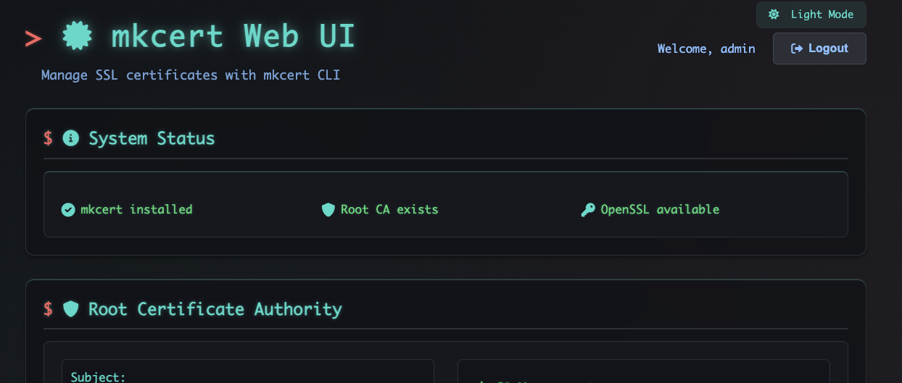

mkcert Web UI
A secure web interface for managing local TLS certificates with mkcert — generation, SCEP enrollment, multiple formats, Docker-ready.
SYSTEM CAPABILITIES
Certificate Generation
Create certificates for multiple domains and IP addresses in one pass.
SCEP Enrollment
Simple Certificate Enrollment Protocol for automatic device enrollment.
Enterprise Security
Command-injection & path-traversal protection with comprehensive rate limiting.
Multiple Formats
Export PEM, CRT, and PFX (PKCS#12) certificates.
Flexible Auth
Basic auth plus OpenID Connect SSO.
Email Notifications
Automated SMTP alerts for expiring certificates.
Certificate Monitoring
Automatic monitoring with configurable warning periods.
Docker Ready
Complete containerization with docker-compose.
DISPLAY OUTPUT

QUICK START
Docker is the recommended path. Then open http://localhost:3000.
git clone https://github.com/jeffcaldwellca/mkcertWeb.git
cd mkcertWeb
docker-compose up -dOr run locally (requires Node.js 16+, mkcert, OpenSSL):
npm install
mkcert -install
npm startMANIFEST
- VERSION
- 4.1.0
- LICENSE
- GPLv3
- REQUIRES
- Node.js 16+ · mkcert · OpenSSL
- SOURCE
- github.com/jeffcaldwellca/mkcertWeb
- IMAGE
- hub.docker.com/r/jeffcaldwellca/mkcertweb
CONSOLE
Interactive terminal. Type help and press Enter.